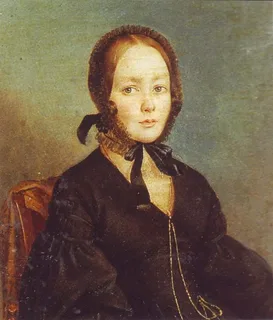
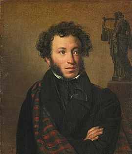

К ****

Я помню чудное мгновенье:
Передо мной явилась ты,
Как мимолетное виденье,
Как гений чистой красоты.
В томленьях грусти безнадежной,
В тревогах шумной суеты,
Звучал мне долго голос нежный
И снились милые черты.
Шли годы. Бурь порыв мятежный
Рассеял прежние мечты,
И я забыл твой голос нежный,
Твои небесные черты.
В глуши, во мраке заточенья
Тянулись тихо дни мои
Без божества, без вдохновенья,
Без слез, без жизни, без любви.
Душе настало пробужденье:
И вот опять явилась ты,
Как мимолетное виденье,
Как гений чистой красоты.
И сердце бьется в упоенье,
И для него воскресли вновь
И божество, и вдохновенье,
И жизнь, и слезы, и любовь.
- Что автор использует для описания образа Е.Керн
- Какие эпититы использует автор?
- Каким гением автор называет девушку?
- Напиши текст про отношение автора к Е.Керн
- Расскажи стих выразительно

Зимний Вечер
мглою небо кроет,
Вихри снежные крутя;
То, как зверь, она завоет,
То заплачет, как дитя,
То по кровле обветшалой
Вдруг соломой зашумит,
То, как путник запоздалый,
К нам в окошко застучит.
Наша ветхая лачужка
И печальна и темна.
Что же ты, моя старушка,
Приумолкла у окна?
Или бури завываньем
Ты, мой друг, утомлена,
Или дремлешь под жужжаньем
СВОего веретена?
Выпьем, добрая подружка
Бедной юности моей,
Выпьем с горя; где же кружка?
Сердцу будет веселей.
Спой мне песню, как синица
Тихо за морем жила;
Спой мне песню, как девица
За водой поутру шла.
Буря мглою небо кроет,
Вихри снежные крутя;
То, как зверь, она завоет,
То заплачет, как дитя.
Выпьем, добрая подружка
Бедной юности моей,
Выпьем с горя: где же кружка?
Сердцу будет веселей.